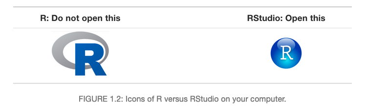
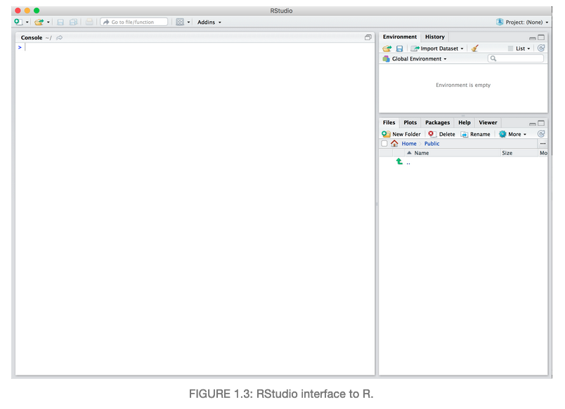
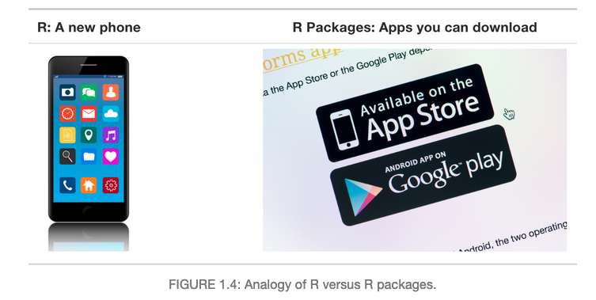
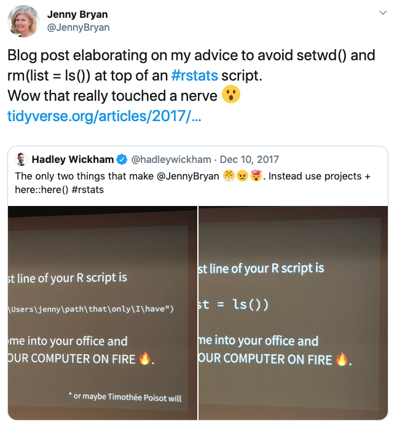
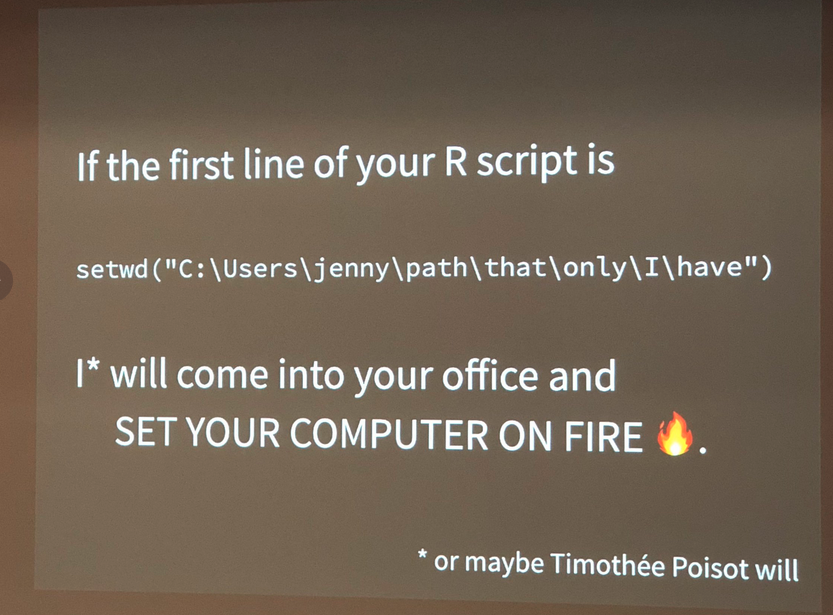

What are R and RStudio?
For this workshop, we will be using R via RStudio.
You can think of R like a car’s engine, while RStudio is like a car’s dashboard.
- R is the programming language that runs computations
- RStudio is an integrated development environment (IDE) that provides an
interface by adding convenient features and tools.

So what this means is that, just as we don’t drive a car by interacting directly
with the engine but rather by interacting with the car’s dashboard, we won’t be
using R directly.
Instead, we will be using the RStudio’s interface.

After you open RStudio, you should see the following 3 panels:
- console,
- files,
- and environment.

What are R packages?
R packages extend the functionality of R by providing additional functions, data
and documentation.
- Think of R packages like apps that you can download onto a mobile phone
- You can get R packages from CRAN
- Or bioinformatics related R packages from bioconductor

So let’s continue with this analogy: Let’s say you’ve purchased a new phone
(brand new R/RStudio install) and you want to take a photo (do some data
analysis) and share it with your friends and family. So you need to:
- Install the app.
- Open the app.
This process is very similar when you are using an R package. You need to:
- Install the pacakge: Most packages are not installed by default when you
install R and RStudio. You will only need to install it again when you need to
update it to a newer version.
install.packages("tidyverse")
- “Load” or open the package: Packages are not loaded by default when you start
RStudio on your computer. So you need to “load” each package you want to use
every time you start RStudio.
library(tidyverse)
See ModernDive Chapter 1 for
further reading.
Workspace and .RData
One day you will need to quit R, go do something else and return to your
analysis later.
One day you will be running multiple analyses in R and you want to keep them
separate.
One day you will need to bring data from the outside world into R and present
results and figures from R back out to the world.
So how do you know which parts of your analysis is “real” and where does your
analysis “live”?
Where am I? (Working Directory)
Working directory is where R will look, by default, for files you ask it to load
or to save.
You can explicitly check your working directory with:
getwd()
[1] "/Users/yukatakemon/GitHub/YukaTakemon/content/post/DataJam-2020-intro-R-RStudio"
It is also displayed at the top of the RStudio console
What if I don’t like where my current working directory is?
DO NOT USE setwd unless you want Jenny Bryan to set your computer on fire!


So what’s wrong with:
setwd("/Users/amy/fuzzy_alpaca/cute_animals/foofy/data")
df <- read.delim("raw_foofy_data.csv")
p <- ggplot(df, aes(x, y)) + geom_point()
ggsave("../figs/foofy_scatterplot.png")
The chance of the setwd() command having the desiered effect - making the file
paths work - for anyone besides its author is 0%. It might not even work for the
author a year or two from now. So essentially your data analysis project is not
self-contained and protable, which makes recreating the plot impossible.
Read more here: https://www.tidyverse.org/articles/2017/12/workflow-vs-script/
Suggestions on how to organize your data analysis:
Typically, I organize each data analysis into a project using RStudio Project. I
tend to have a directory each for:
- raw data
- processed data
- output or figures
- scripts
Next, we’re going to:
- Open up RStudio
- Create our first project
- Create and save a script to save our code
- Go over some basic operations and syntax in R